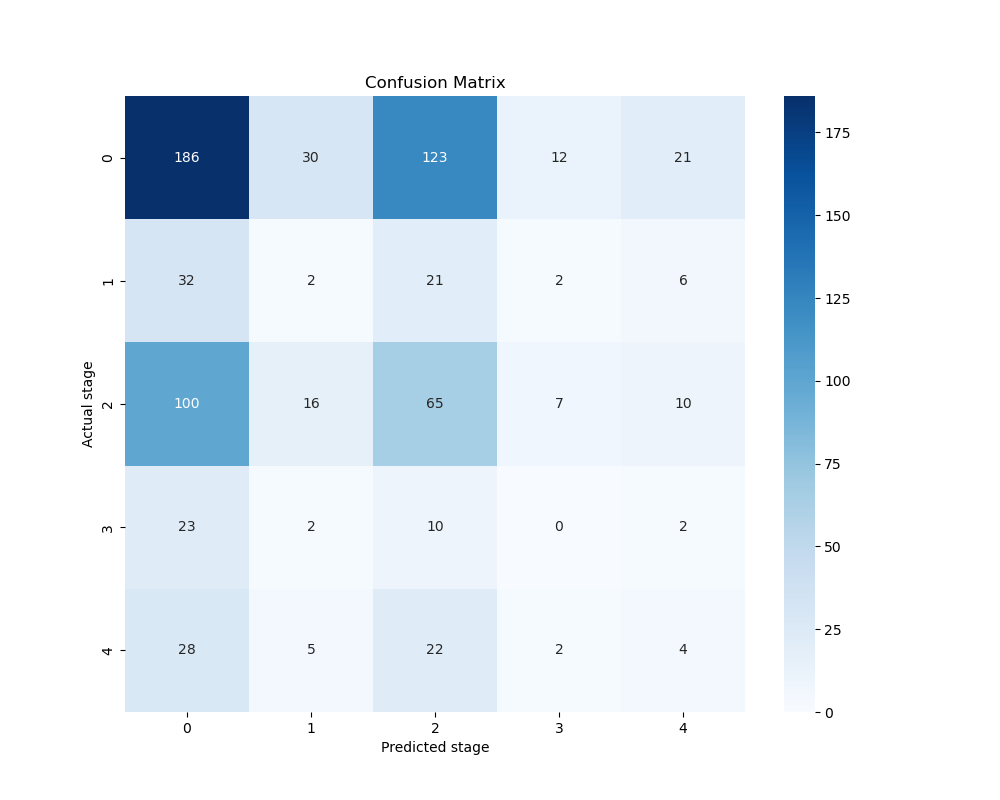

Model Performance for the various identified use cases
It shows the distribution of cases identifies across all types contrasted with the actual stage of DR.
The presence of false negatives and false positives underscores the need for continuous model training and improvement, especially in enhancing the model's ability to detect more subtle signs of the condition. Future iterations of the model will focus on reducing these errors by incorporating more diverse data and improving the algorithm’s feature detection capabilities.
id_code: Unique identifier for each patient.age: Age of the patient.gender: Gender of the patient (Male or Female).diagnosis: Diagnosis results, encoded as integers representing different stages of diabetic retinopathy.The datasets are used to train and validate a machine learning model designed to detect different stages of diabetic retinopathy from images of the retina. The model helps in preliminary screening and assists healthcare providers in diagnosis.
The data comprises demographic information (age, gender) and diagnosis results.
The data is anonymized to protect patient privacy, with each entry represented by a unique identifier rather than personal information. Measures are taken to ensure data integrity and relevance to the condition being screened.
The training data is used to teach the model to recognize signs of diabetic retinopathy in retinal images based on known outcomes. The testing data evaluates the model's accuracy and ability to generalize to new, unseen cases.
The data might not cover all demographics equally, which could affect the model's performance across different population groups. The stages of diabetic retinopathy are encoded numerically; 0: 'No signs', 1: 'Mild', 2: 'Moderate', 3: 'Severe', 4: 'Proliferative signs'.